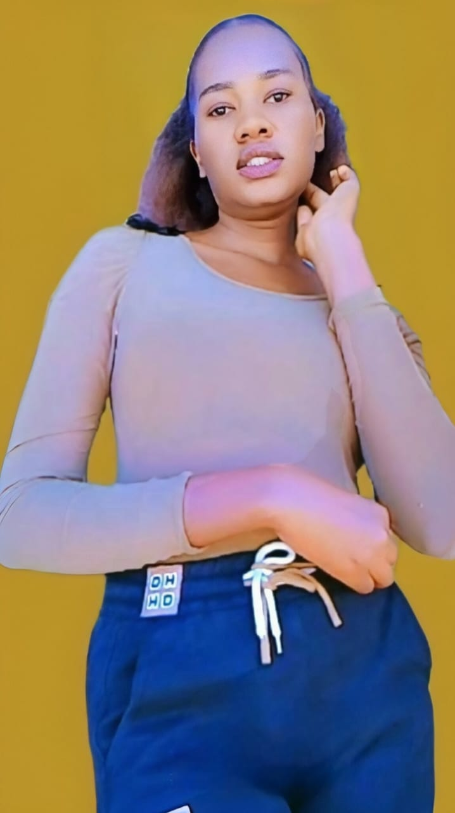

Meet the Author
Hi, I’m Bredar Wangari, also known as Wangari Bree or you can call me BreezyBee 🐝.
I’m the creator of BeeVerse Tales — a planet where stories, poems,
research, and creativity come alive. Writing is not just my passion,
it’s the way I breathe life into thoughts, laughter, and dreams.
From heartfelt poetry to humorous pranks, from creative stories to research,
BeeVerse Tales is my canvas. I hope you’ll explore, enjoy, and maybe even
submit your own spark of imagination ✨.
Introduction
I’m a writer, web developer, book editor,
and proud cat mom. My partner in creativity is Mimi,
a fluffy ball of sunshine who believes she runs this place (and honestly, she does 😸).
My Writing Journey
If I’m not writing, you’ll probably find me outdoors 🌿, soaking in the beauty of nature.
Watching the trees sway, listening to birds, or just breathing in fresh air
feels so therapeutic — and it often sparks feelings I never knew I had ✨.
I value mental health deeply, and that’s one of the reasons I also write self-help articles.
For me, writing isn’t just words — it’s healing, discovery, and connection.
Beyond Writing
I’m also a huge lover of fashion 👗✨. If I’m not writing, editing,
or working on a project, you’ll probably catch me designing outfits
and making sure they look k-ute 💅.
Funny thing — I once dreamed of being a model, but life had other plans.
Instead of the runway, I found myself in the library 📚,
where I studied Information Science in campus.
Maybe not the catwalk, but definitely a path that shaped my creative journey.
Creative Roots

Back in high school, I was into drama 🠗 but let’s just say music and I
didn’t exactly get along. I got kicked out of music because of my two left legs
that refused to dance 💃😂.
Truth is, I almost made it — just slightly. My voice was never meant for singing,
but I’m a terrific bathroom singer and an even better solo dancer.
When I step outside, though, my voice finds its real home in poetry and storytelling.
My brothers used to tease that I “speak with my nose,” but honestly,
I think I have a pretty sweet voice — one made for words, laughter, and tales.
How My Writing Journey Began
As a kid, I was that child who pressured her parents to buy storybooks 📚.
Ask me about any childhood book and I could tell you exactly which shelf it sat on.
At night, my mum told me tales — and I loved trickster narratives the most.
Maybe that’s where the Prankster Queen in me was born 👑😂.
I still remember pranking my brother with a fake sweet — he fell for it, of course!
Speaking of family, I’m the only girl, the lastborn, with two older brothers.
Can you believe that? The chaos and the comedy write themselves.
I also adored ogre tales — they were my childhood horror movies.
I’d dream of being chased by ogres, terrified but fascinated all the same 👹.
Back in 2011, when I was in class four, I started writing little scripts.
Inspired by my New Progressive Primary English Book,
they were “for my eyes only,” but to me they felt like masterpieces.
Then in class eight (2015), I wrote my very first poem — about smoking —
pulling ideas from what I saw in class.
From there, writing became a lifelong companion.
By 2021 in campus, I finally started sharing my poems publicly.
That’s also when I landed my first editing gig, thanks to Joseph Thiong’o’s
Love Poems Inspired by a Friend. He believed in me,
and that belief gave me wings ✨.
My journey continues — and so can yours.
I hope you’ll find a spark of motivation here in BeeVerse Tales 💛.
Thank you for stopping by my little corner of BeeVerse Tales. ✨
Every poem, every story, and every piece of mischief I write is a piece of me
that I’m sharing with you. I hope you find laughter, healing, and maybe even
a little inspiration here.
So grab a cup of tea (or coffee if you must 😅), curl up somewhere cozy, and
let’s explore worlds together — one word at a time.
With love and a sprinkle of mischief,
Bredar Wangari
Read My Latest Work